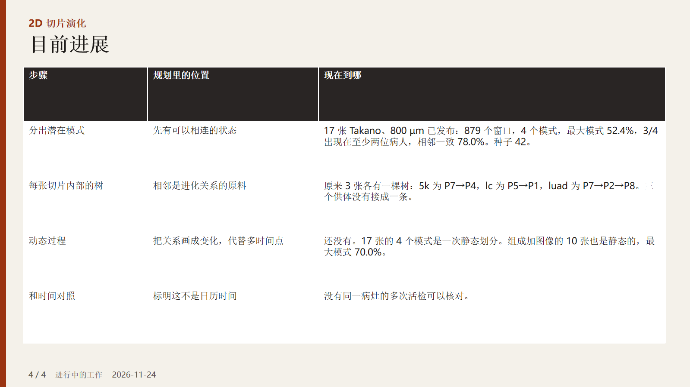

- H&E 预测空转
- 斑点上的基因表达
- 实测切片当锚
- HER2 相关 0.0788，门槛未过
四项进行中的工作
3D 重构、2D 切片演化、虚拟细胞、H&E 预测空转。每一项的目的分成生物学问题和临床问题，依据写在该节下面。原理、当前结果和还要走到的地方仍是这项工作自己的进度。
训练步数和 H&E 这一轮的相关记于 2026-11-24 17:14。3D 体积没有新测。2D 的公开页面是 17 张 Takano、800 µm、4 个模式，模式之间还没有画成动态过程。
| 项目 | 当前结果 | 入口 |
|---|---|---|
| 3D 重构 | 小鼠肺 150 张连续切片，1.5 mm 组织块，11.7 亿体素 | 体积页面 |
| 2D 切片演化 | 公开页面是 17 张 Takano、800 µm、4 个模式。模式之间还没有画成随时间变化的过程 | Annotile |
| 虚拟细胞 | Tahoe 3388 与 Orion 332 个分片已就绪。三头效应模型训到第 6300 步，还没有跟 STATE 比 | 数据在服务器上，页面还没有 |
| H&E 预测空转 | HER2 四折平均相关 0.0788、SSIM 0.0447、高变基因 0.1267、空间可变基因 0.2236，四项门槛都未过 | MorphGate 文章 |
四项怎么连成数字孪生
用途
生物学尺度（由内向外套）
- 虚拟细胞
- 药物或基因扰动
- Tahoe 与 Orion
- 3388 分片，效应模型在训
- 2D 切片演化
- 相邻窗口的细胞组成
- 上皮、内皮、基质
- 17 张，4 个模式，还没有动态过程
- 3D 重构
- 真实层距的体积
- 病灶、结构、范围
- 小鼠肺 1.5 mm
- 数字孪生
- 内四层来自同一块组织
- 新测量写回各层
- 验证后才参与决定
从左到右一层套一层。线上的光点表示测量要沿这条线走：先配准成体积，再读邻域。
Tan 等人的梯子
- 表示细胞
- 还不是孪生
- 模拟基因扰动
- 还不是孪生
- 三维肿瘤微环境
- 细胞在测到的邻域里一起变
- 随这个人的新数据更新
- 用来试治疗
- 只建一次叫数字影子
四项接到结构、环境、行为
- 存档切片多，空转贵
- 少数实测切片当锚
- 按真实层距配准
- 叠成一块体积
- 哪些状态相邻
- 轨迹从哪里长出来
- 药物或基因扰动
- 细胞状态怎么转移
- 小鼠体积、三张人肺、Tahoe、HER2 来自不同标本
- 验证和不确定性还没有做
同一块人肺癌上的四类测量能互相改写之后，才开始是这个病人的数字孪生。
尺度分法来自 Bunne 等，Cell，2024，10.1016/j.cell.2024.11.015。Tan 等，Biomedicines，2026，14(11):2689。Kemkar 等，Frontiers in Physiology，2024，10.3389/fphys.2024.1473125。
3D 重构
目的
一张切片看不到的东西
- 只切到其中一个面
- 细胞团
- 导管
- 浸润前沿
- 启动、浸润、治疗反应
- 少见病灶和少数细胞
- 形态和分子叠到同一坐标
临床病理的三件事
- 微小浸润、微转移
- 可能不在抽到的切片上
- 贴壁、乳头、腺泡、微乳头、实性
- 二维上专家重复性不高
- 最大径和灶数取自切面
- 不规则肿块会量偏
- 小鼠肺的真实层距体积
- 更大样本还没证明提高诊断
- 还不是临床诊断
Yoshikawa 等，Cancer Science，2024，10.1111/cas.16095。Kiemen 与 Wood，Annual Review of Cancer Biology，2026，10.1146/annurev-cancerbio-070924-011950。
原理
- 每张切片
- 相邻切片
- 仿射加弹性
- DeepLabv3+
- ResNet-50
- 5 张有标注
- 150 张
- 配准场套到分类图
- 按真实层距
- 发射吸收光线行进
- 颜色是分类器自己的调色板
当前结果
- 150 张
- 每张 10 µm
- 2983 × 2497 × 150
- 1,117,282,650 体素
- 11.93 × 9.99 × 1.50 mm
- 0.179 cm³
- 约整肺的 13.8%
- 体素 4 × 4 × 10 µm
- 肺泡占组织的大头
- 血管 0.228 mm³
- 细支气管 0.334 mm³
- 标成癌 0.023 mm³
- 验证损失 0.02596
这是 1.5 mm 厚的组织块。小鼠肺大约长 10 到 20 mm，所以不是整只肺的外形。发光把血管和气道画粗了。旋转视频是这同一个体积。人体解剖肺和程序生成的肺叶没有放进这个体积。
期待目标
- 上皮区看起来是两块
- HT704B1
- 切面相距超过 5 mm
- 约 200 µm 层叠里连上
- 看似散开的浸润癌
- 原位癌嵌在树里
- 先二维分开
- 再查第三维是否相通
Storrs 等，Cancer Discovery，2026，Spatial Mapping of the Precancer-to-Cancer Transition in Breast and Prostate。
规划和图就在这一节里。


2D 切片演化
目的
- 批量测序
- 打散的单细胞
- 被间质隔开的癌细胞团
- 同一套遗传改变
- 中心和边缘的代谢、抗原呈递
- T 细胞、巨噬细胞的位置
- 相邻区域的组成和表达
- 还没有突变或拷贝数
- 不能据此选药
Mo 等人看到原发和转移的生长方式分开，三维亚克隆周围免疫耗竭升高，热区和冷区并存。他们的材料是六个癌种的 Visium。这里接到的是位置上相邻的状态怎么变。
Mo 等，Nature，2024，10.1038/s41586-024-08087-4。
原理
- 三张人肺 Xenium
- 400 µm，至少 30 个细胞
- 共 785 个
- 细胞类型比例
- 153 个基因的 16 个主成分
- 配准 H&E 的颜色和纹理
- 高斯混合，按 BIC
- 8 个模式
- 相邻同模式 83.6%
- 只走同一张切片上相邻的窗
- 根是分化上皮最高的窗
- 种子 42
对应 Pham 等人 2023 年的 pseudo-time-space。没有剪接计数，所以没有 RNA velocity。三个供体没有接成一条轨迹。
当前结果
- 上皮 0.47 → 0.21
- 内皮 0.06 → 0.34
- 上皮 0.27 → 0.48
- 内皮 0.43 → 0.07
- 上皮 0.53、0.59 → 0.11
- 到 P8 内皮 0.41
箭头画在配准后的 H&E 上。t-SNE 和 UMAP 里的灰线和红线是这棵空间树。视频约 8 秒，后面的肺是 BodyParts3D 外形。P2 上皮 z +1.38、增殖 −0.10。P3 增殖 +2.59、基质 +1.32、CXCL9 +2.01，主要来自 lc。面板里没有 ISG15、IFI27、IFIT3、HLA-DRA，所以没有患者级 archetype，也没有跨患者 ecotype。
- 1,329,253 个细胞
- 1,875 个窗口，68 个基因
- 没有 H&E，细簇 44，8 个模式
- 相邻同模式 83.4%
- 三张切片各自收成一个模式
- 没有当成公开结果
- 17 张 Takano
- 800 µm，4 个模式
- 还是一次静态划分
期待目标
- 同一块肿瘤的多个时间点
- 从一个模式走到相邻的另一个
- 组成变化代替时间
- 三张切片的树只是内部相邻
- 17 张的 4 个模式仍是静态划分
规划和图就在这一节里。


虚拟细胞
目的
- 分子、细胞、组织
- 不同条件、不同扰动
- 现有模型还模拟不了状态怎么变
- 跨尺度的通用表示
- 可以解释的计算机实验
- 新的药物靶点
- 预测扰动后的反应
- 追疾病的原因
- 把搜索扩到做不完的实验之外
- 评价、数据、可解释性都还没齐
- Tahoe 是语料，小模型只看结构
- 没有新靶点，没有进入临床
Bunne 等，Cell，2024，10.1016/j.cell.2024.11.015。
原理
- 先学细胞状态
- 再学状态怎么转移
- Tahoe 3388 个分片
- Orion 332 个分片
- 都已转成 h5
- 强度、方向、幅度
- 种子 42，GPU 0
- K562 和 RPE1 留出
细胞系特异的表观残差等这一阶段稳定后再接。浏览器里的实验站是 16 个基因的合成表，按细胞周期、TP53、mTOR、KRAS/MAPK 和干扰素书写，用来看知识 token 怎么读 STRING 和 DepMap。那不是 Tahoe，也不是这次效应模型的成绩。
当前结果
- 第 6300 步
- 约 2217 万个细胞
- 训练 1.1332
- 验证 1.5587
- 留出细胞数是 0
- 没有跟 STATE 比
- 实验站的曲线不能当成绩
期待目标
- 这一阶段先跑完
- 加上细胞系特异的表观残差
- Cell-Eval、cell-eval2
- 比完之前不写超过
- 2026 年挑战赛前三名
- 奖金一半现金、一半额度
第三名是 25,000 美元。Arc Institute，2026-11-19，Virtual Cell Challenge 2026: Winners and Wrap-Up。条的长度按公布金额。
H&E 预测空转
目的
- 组织坐标上谁在表达什么
- 成对的苏木精伊红
- 医院里大量存档的是染色切片
- 常规切片带上空间分子
- 区分生存风险
- 认出已有名称的区域
- TCGA 上生存区分仍然有限
- 预测有多接近实测
- 生存和跨研究还没有做
Wang 等，Nature Communications，2025，10.1038/s41467-025-56618-y。
原理
- 同一病人的切片不拆开
- 两折训练，一折验证，一折测试
- 报四个测试折的平均
- HER2 785，cSCC 997
- 高变 30，空间可变 20
- 和 scran、SPARK-X 不完全一样
- 斑点和六个近邻，岭回归
- 门控：相关低于 0.10 填均值
- 去掉门控则全部回归
- GHIST-spot：6 个程序
- 224 像素，冻结的 ImageNet ResNet-18
- 按切片居中，64 维主成分，6 近邻
- 验证折在岭回归、检索、原型、混合里选
Fu 等人的深度网络和 Hover-Net 没有重跑。原文的 0.16 单独记，不画成这次的结果。
当前结果
- 相关 0.0788
- SSIM 0.0447
- 高变 0.1267
- 空间可变 0.2236
- 相关 0.1398
- SSIM 0.0768
- 高变 0.1435
- 空间可变 0.1854
- 去掉门控 HER2 0.071 / 0.045 / 0.072 / 0.141
- GHIST-spot 0.044 / 0.018 / 0.044 / 0.063
- 0.16、0.10、0.20、0.27
- 四项都没过，文章没改
下面是已经核对过文件清单或服务器副本的切片数。棕色是细胞分辨率，蓝色是斑点。
肺腺癌两行是 Takano。HER2ST 是 Andersson，36 张、8 个供体。皮肤鳞癌四折是 P2、P5、P9、P10，各 3 张。两行 Xenium 是 GSE311609 的文件清单，22 张肺来自 10 个供者，19 张乳腺来自 17 个供者。直肠癌 SPATNIC 的 52 例没有公开入口，没有画进这张图。
期待目标
- 现在 0.0788
- 现在 0.0447
- 现在 0.1267
- 现在 0.2236
- 四项都过了再改文章